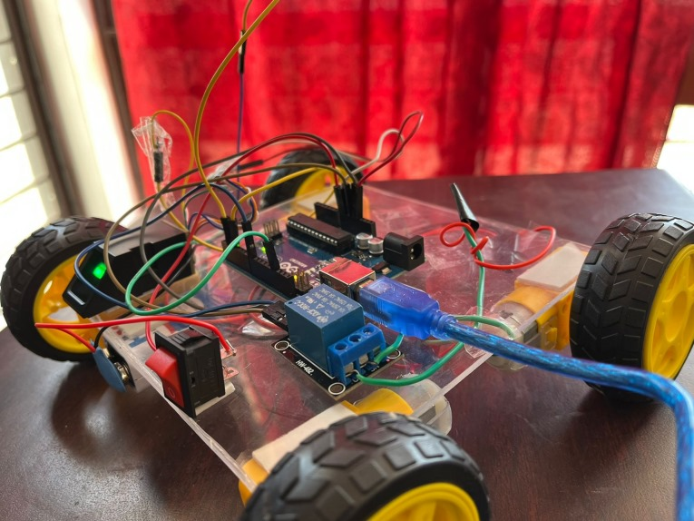

Biometric Access Controlled Automotive Security System
This project introduces a highly secure and convenient vehicle starter system powered by biometric fingerprint recognition technology.
Organization: IIITDM Kurnool
Role: Lead Developer
About the Product
A fingerprint vehicle starter ensures that only authorized individuals can start a car. By replacing traditional keys, this system enhances security and eliminates the risk of key loss or theft. It uses a fingerprint scanner linked to the ignition system, allowing seamless vehicle access while preventing unauthorized usage.
This system is convenient, highly secure, and can be retrofitted to most vehicles, making it an effective solution for personal and commercial applications. Backup options, such as PIN codes, are also available for redundancy.
Components and Specifications
- AS608 Optical Fingerprint Sensor Module
- Arduino UNO
- Relay
- 100 RPM DC Motor
- Breadboard
- 12V Battery
Circuit Design
Block Diagram